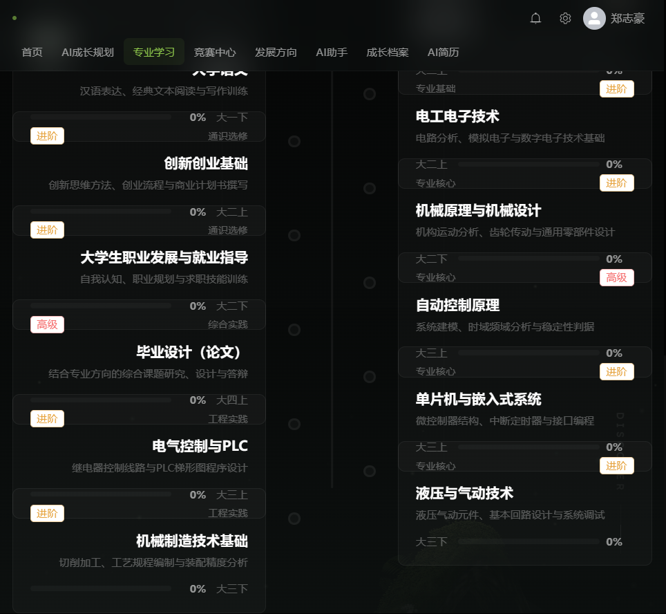

2026 第九届传智杯全国大学生数智创新与 AI 应用大赛 · AI WEB 网页开发挑战赛（团队赛）
2026 年 10 月
智途AI 是一个 AI Native 的大学生成长规划 Web 平台。它针对大学生在成长规划上的三个真实困境——不知道自己在什么水平、不知道每个阶段该干什么、计划定了坚持不下来——把档案初始化、学生画像、四年规划、动态学习计划、竞赛推荐、简历生成串成一条闭环，并内置一个会自己调用工具查询真实数据、且把推理依据完整摆出来的成长 Agent。
与市面上「套壳 AI 聊天」作品的本质区别在于：本平台的 AI 回答不是大模型凭空生成的，而是由 Agent 运行时驱动大模型调用 8 个只读工具（档案、画像、课程、竞赛、学习计划、成长记录、知识库、规划），每一步工具调用都返回数据库里的真实数据；回答结束后，前端展开「执行依据」卡片，展示调用了哪些工具、参考了哪些知识库片段、事实校验结果。模型说的每一个数字都能找到出处。
核心数据：覆盖 175 个专业、19 个专业方向；101 场真实竞赛内置种子数据；本地 RAG 知识库 4200+ 片段；后端 57 个单元测试全部通过；26 个专业两轮批量回归验证。
| 角色 | 手机号 | 密码 |
|---|---|---|
| 学生（数据完整，推荐演示） | 13800000000 | 123456 |
| 管理员 | 13900000000 | 123456 |
智途AI-便携版 目录，双击
启动智途AI.bat，浏览器访问
http://localhost:8080。内嵌 H2 数据库，免安装
MySQL、免配置。mvn spring-boot:run，前端 npm run dev，按
README 配置即可。docker compose up -d --build 一条命令拉起
MySQL + 后端 + 前端。平台支持双引擎诚实降级：
登录 → 档案初始化（专业/年级/GPA/目标 + 九维能力自评）→ 一键生成学生画像与四年规划 → 每周动态学习计划（打卡后 AI 重排）→ 竞赛中心查看对口赛事 → AI 成长助手提问（展开「执行依据」看工具轨迹与引用来源）→ 拍照录入证书（AI 抽取字段、人工核对后入库）→ 一键生成简历。
平台实现了完整的五阶段 Agent 流水线：安全护栏 → RAG 检索 → 工具循环（≤4 轮）→ 流式合成 → 事实校验。大模型通过 Function Calling 协议自主决定调用哪些工具，工具返回的数据注入下一轮上下文。回答不是「生成出来的」，而是「查出来的」。
前端将 Agent 的思考过程渲染为「执行依据」卡片：每一步调用了哪个工具、传入什么参数、返回什么真实数据、引用了知识库哪些片段、事实校验是否通过。这是本平台与「套壳聊天」作品最直观的区别。
动态 Canvas 知识网络背景贯穿全站、NDJSON 流式输出、语音输入与朗读、ECharts 能力雷达图、简历打印预览。未配置 Key 时功能零阉割。
| AI 能力 | 落地场景 | 实现方式 |
|---|---|---|
| LLM Agent | AI 成长助手 | 自研 AgentRuntime：护栏→RAG→工具循环≤4轮→流式合成→事实校验 |
| Function Calling | 8 个只读工具 | 一份定义两套出口：OpenAI tools 协议 + MCP manifest |
| RAG 检索增强 | 知识问答引用溯源 | 零依赖本地实现：BM25(55%) + 128 维哈希向量余弦(45%)，4200+ 片段 |
| 多模态（视觉） | 证书/奖状拍照录入 | visionForUser 接口抽取字段，人工核对后入库 |
| 多模态（语音） | 语音输入/朗读 | Web Speech API，本地识别 |
| AI 安全护栏 | 全站 | 注入正则拦截、脱敏、防幻觉 LCS 校验、JSON 自修复 |
| 降级与兜底 | 无 Key 环境 | 本地规则编排引擎，工具真实执行，诚实标注来源 |
| MCP 协议 | 能力外放 | 独立 Node.js MCP Server（stdio JSON-RPC），initialize/tools/list/tools/call 全部通过 |
登录页：动态知识网络背景 + 演示账号一键填充。

首页：成长闭环六节点，档案/规划/竞赛/简历进度实时推进。

竞赛推荐：三级对口标记（精确对口/不限专业/同大类）+ 评分理由。

课程自动匹配：按专业方向动态生成，覆盖 175 个专业。

管理后台：用户管理、数据概览、级联清理。
本项目为本团队 2026 年为第九届传智杯 AI WEB 网页开发挑战赛开发的原创作品，未在任何期刊、会议公开发表，未获得过其他赛事奖项。
本项目以基础的前后端脚手架为起点，以下核心模块均为本团队原创实现：
除 Spring Boot / Vue / Element Plus / ECharts 等业界通用开源框架外，业务代码与 AI 层均为原创，未使用任何「开箱即用」的 AI 应用模板。